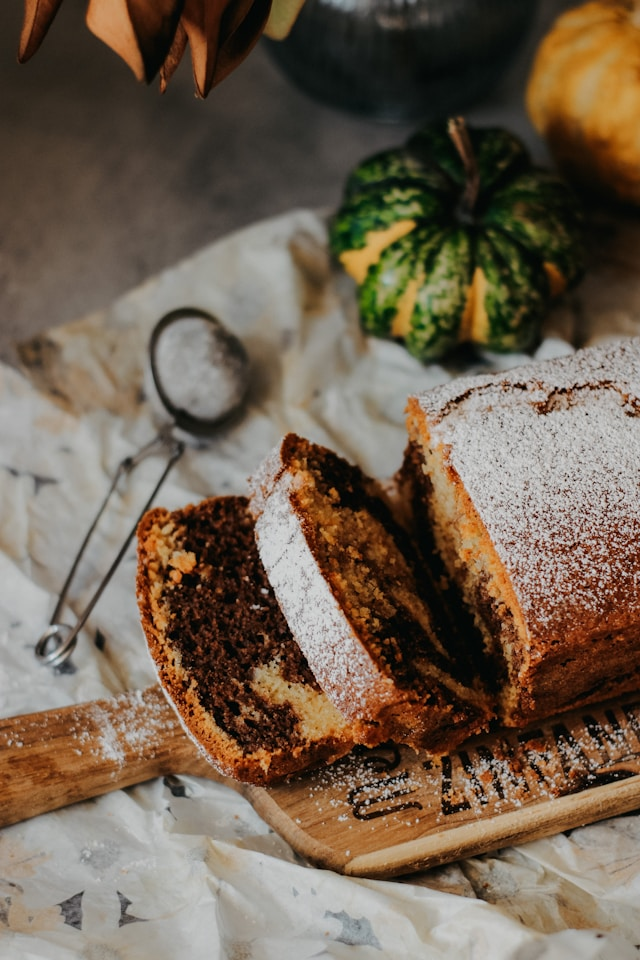

Home
Marble Cake

Photo by Nataliya Melnychuk on Unsplash
Description
A classic german Marble Cake. Traditionally topped with powdered sugar and served with whipped cream.
This recipe uses a 10 inch tube pan and makes 14 to 16 servings.
Ingredients
- 1 cup butter
- 1 1/2 cups white sugar
- 4 eggs
- 1 cup milk
- 1 tsp almond extract
- 3 1/4 cups all-purpose flour
- 1 tbsp baking powder
- 1 pinch salt
- 1/4 cup unsweetened cocoa powder
- 3 tbsp dark rum
Steps
- Preheat oven to 350 degrees F (175 degrees C). Grease and flour one 10 inch tube pan.
- In a large bowl, cream the butter with sugar. Beat the eggs, then the milk and almond extract.
- In another bowl, stir together the flour, baking powder and salt. Beat the flour mixture into the creamed mixture. Turn half of the batter into another bowl and stir in the cocoa and the rum.
- Layer the light and dark batter by large spoonfuls and then swirl slightly with a knife.
- Bake the cake in at 350 degree F (175 degree C) for about 70 minutes, or until it tests done with a toothpick. Transfer to a rack to cool. Makes about 14 to 16 servings.